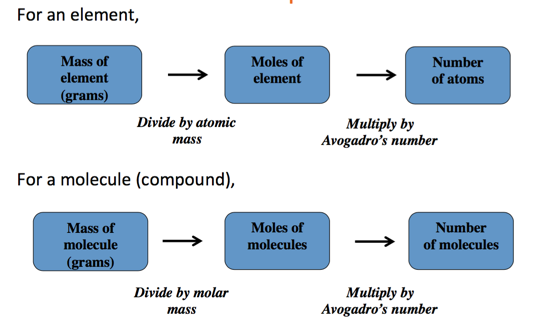

Week 3 - Day 1
Navigate using audio
Announcements
- If you’ve had an error while trying to do the pre-lab before the assignment was due, you will not be penalized and you will be able to participate in the lab
- If you go to recitation, you’ll see a grade, but you won’t actually get a grade for it, it’s just to let you know how you did
- Blackboard isn’t trustable in terms of what your actual grade is
Energy of Matter
- Audio 0:01:00.206391
- all matter possesses energy
- energy is classified as either kinetic or potential
- energy can be converted from one form to another
- when matter undergoes a chemical or physical change, the amount of energy in the matter changes as well
Energy of Matter - Kinetic
- Audio 0:02:50.452505
- Kinetic energy is energy of motion
- motion of the atoms, molecules, and subatomic particles
- thermal (heat) energy is a form of kinetic energy because it is caused by molecular motion
Energy of Matter - Potential
- Audio 0:04:28.166741
- potential energy is energy that is stored in the matter
- due to the composition of the matter and its position in the universe
- chemical potential energy arises from electrostatic forces between atoms, molecules, and subatomic particles
Conversion of Energy
- Audio 0:04:55.558320
- Can interconvert kinetic energy and potential energy
- whatever process that converts energy from one type or form to another, the total amount of energy remains the same
- Law of Conservation of Energy
Spontaneous Processes
- Audio 0:05:47.137848
- materials that possess high potential energy are less stable
- processes in nature tend to occur on their own when the result is material(s) with lower total potential energy
- processes that result in materials with higher total potential energy can occur, but generally will not happen without input of energy from an outside source
- when a process results in materials with less potential energy at the end than there was at the beginning, the difference in energy is released into the environment
- Released as heat
- Can be used to drive your car, heat your house, cool your house, etc
-
- Audio 0:08:24.475547
- Potential becomes kinetic energy which becomes heat
Potential to Kinetic Energy
- Audio 0:09:14.128456
-
- Gasoline burns, heat comes out tailpipe, but also propels car forward
Properties of Matter
- Audio 0:09:54.800676
- physical properties are the characteristics of matter that can be changed without changing its composition
- characteristics that are directly observable
- chemical properties are the characteristics that determine how the composition of matter changes as a result of contact with other matter or the influence of energy
- characteristics that describe the behavior of matter
Convert 172.9 F to degrees Celsius
- Audio 0:14:51.677292
Dimensional Analysis Method of Solving Problems
- Audio 0:17:11.366509
- Determine which unit conversion factor(s) are needed
- Carry units through calculation
- If all units cancel except for the desired unit(s), then the problem was solved correctly.
Ex: How many mL are in 1.63 L?
Ex: The speed of sound in air is about 343 m/s. What is this speed in miles per hour? (1 mile = 1.609 km)
- Audio 0:20:52.486829
What is a Mole?
- Audio 0:23:59.232240
- A mole is a scientist’s “baker’s dozen.”
- When we count large numbers of objects, we often use units such as
- 1 dozen objects = 12 objects
- 1 gross objects = 144 objects.
- When we count large numbers of objects, we often use units such as
- A mole (mol) of anything contains 6.02214 × 1023 pieces.
- Examples:
- 1 mol of marbles corresponds to 6.02214 × 1023 marbles.
- 1 mol of sand grains corresponds to 6.02214 × 1023 sand grains.
- Examples:
- This number is Avogadro’s number.
The Mole
- Audio 0:26:54.511808
- The second, and more fundamental, thing to understand about the mole is how it gets its specific value.
- The value of the mole is equal to the number of atoms in exactly 12 grams of pure C-12.
- 12 g C = 1 mol C atoms = 6.022×10^23 C atoms
Mole Conversions: Atoms to Moles or Moles to Atoms
- Audio 0:28:02.694268
- Converting between number of moles and number of atoms is similar to converting between dozens of eggs and number of eggs.
- For atoms, you use the conversion factor 1 mol atoms = 6.022 × 1023 atoms.
- The conversion factors take the following forms:
Converting between Mass and Moles
- Audio 0:28:55.905682
- The molar mass of any element is the conversion factor between the mass (in grams) of that element and the amount (in moles) of that element.
- Example:
- 12.01 g C atoms = 1 mol C atoms
- or 12.01 g C atoms/1 mol C atoms
- or 1 mol C atoms/12.01 g C atoms
Mass to Moles to Number of Particles: The Conceptual Plan
- Audio 0:30:08.760686
- 
Converting between Mass and Moles
- Audio 0:31:09.351315
- How many copper atoms are in a copper penny with a mass of 3.10 g? (Assume that the penny is composed of pure copper: Molar Mass of Copper: 63.55 g/mol)
Ex: Converting mass and moles
- How many copper atoms are in a copper penny with a mass of 3.10 g? Mollar mass of Copper is 63.55g/mol
- Audio 0:33:32.001193
Li atoms
- How many lithium atoms are in 97.9 grams of Lithium. The molar mass of Lithium is 6.94 g / mol
- Audio 0:35:39.657032
Converting between Particles and Mass
- Audio 0:39:03.568008
- An aluminum sphere contains 8.55 * 10^22 aluminum atoms. What is the sphere’s radius in cm? Density of aluminum is 2.7 g/cm^3
Vocab
| Term | Definition |
|---|---|
| kinetic energy | energy of motion |
| potential energy | energy that is stored in matter |
| law of conservation of energy | says you cannot create or destroy energy |
| physical properties | properties that can be changed without changing matter’s composition |
| chemical properties | properties of matter which determine how the composition of matter changes when it contacts other matter |
| mole (Avogadro’s number) | 6.022 * 10^23 of anything |